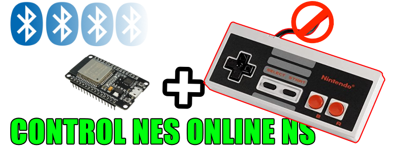

de que trata?
El ESP32 es un dispositivo que nos facilita la implementacion de distintos tipos de proyectos y su programacion normalmente requiere de software y programas adicionales para grabar diferentes tipos de firmware para cada uno de los proyectos;
Y como tengo pensado implementar una gran saga de videos donde aprenderemos a crear distintos tipos de controles bluetooth para nuestro dispositivos **BLUERETRO** ademas de compatibilidad adicional para la **NINTENDO SWITCH** y siguiendo el trabajo de [witnessmenow] he creado esta pagina simple que se actualizara constantemente con el lanzamiento de cada proyecto asociado a [mi canal de youtube] de esta manera los invito a guardar en favoritos esta pagina que traera la creacion de multiples controles para todo tipo de consolas.

PROGRAMAR ESP32 PARA USAR COMO BLUERETRO EN LAS CONSOLAS

Aqui podras programar facilmente tu ESP32 para usar en tus consolas retro sea de manera **INTERNA** o tambien de manera **EXTERNA** para simplificar el proceso de instalacion sin necesidad de instalas apps en tu pc
[CLIC AQUI PARA PROGRAMAR TU ESP32 CON "BLUERETRO" 1.8.3].
TOPPERCADE ESP32 CON LUZ para BLUERETRO y NINTENDO SWITCH!
En este proyecto crearemos una palanca tipo ARCADE compatible con todas las **NINTENDO SWITCH** en la aplicacion oficial **NINTENDO ONLINE** ademas de doble payload para que tambien sea compatible con **BLUERETRO, android, pc, windows, mac y mucho mas**
[CLIC AQUI PARA PROGRAMAR EL CONTROL TIPO ARCADE ESP32 ].
CONTROL TIPO ARCADE ESP32 para BLUERETRO y NINTENDO SWITCH!

En este proyecto crearemos una palanca tipo ARCADE compatible con todas las **NINTENDO SWITCH** en la aplicacion oficial **NINTENDO ONLINE** ademas de doble payload para que tambien sea compatible con **BLUERETRO, android, pc, windows, mac y mucho mas**
[CLIC AQUI PARA PROGRAMAR EL CONTROL TIPO ARCADE ESP32 ].
CONTROL TIPO NES ONLINE PARA: NINTENDO SWITCH y BLUERETRO!
En este proyecto crearemos un control NES ONLINE totalmente compatible con todas las **NINTENDO SWITCH** Incluyendo sonidos y fondos distintivos en la aplicacion oficial **NES ONLINE**
[CLIC AQUI PARA PROGRAMAR EL CONTROL NES ONLINE y BLUERETRO! esp32 DIY ].
CONTROL TIPO SNES ONLINE PARA: NINTENDO SWITCH y BLUERETRO!
En este nuevo proyecto crearemos un control SNES ONLINE totalmente compatible con todas las **NINTENDO SWITCH** Incluyendo sonidos y fondos distintivos en la aplicacion oficial **SNES ONLINE**
[CLIC AQUI PARA PROGRAMAR EL CONTROL genesis megadrive ONLINE y BLUERETRO! esp32 DIY ].
CONTROL TIPO genesis / megadrive ONLINE PARA: NINTENDO SWITCH y BLUERETRO!

En este nuevo proyecto crearemos un control TIPO genesis / megadrive ONLINE totalmente compatible con todas las **NINTENDO SWITCH** en la aplicacion oficial **SEGA GENESIS ONLINE**
[CLIC AQUI PARA PROGRAMAR EL CONTROL genesis / megadrive ONLINE y BLUERETRO! esp32 DIY ].
CONTROL (ORIGINAL) NINTENDO 64 ONLINE PARA: NINTENDO SWITCH y BLUERETRO!

En este nuevo proyecto crearemos un control (ORIGINAL) TIPO NINTENDO 64 ONLINE totalmente compatible con todas las **NINTENDO SWITCH** en la aplicacion oficial **NINTENDO ONLINE** ademas de doble payload para que tambien sea compatible con **BLUERETRO, android, pc, windows, mac y mucho mas**
[CLIC AQUI PARA PROGRAMAR EL CONTROL DE NINTENDO 64 PARA SWITCH y BLUERETRO! esp32 DIY ].
CONTROL GAMECUBE PARA: NINTENDO SWITCH y BLUERETRO!

En este nuevo proyecto convertiremos un control original de GAMECUBE en uno **inalambrico Bluetooth** totalmente compatible con todas las consolas **NINTENDO SWITCH** ademas de doble payload para que tambien sea compatible con **BLUERETRO**
[CLIC AQUI PARA PROGRAMAR EL CONTROL DE GAMECUBE PARA SWITCH y BLUERETRO! esp32 DIY ].